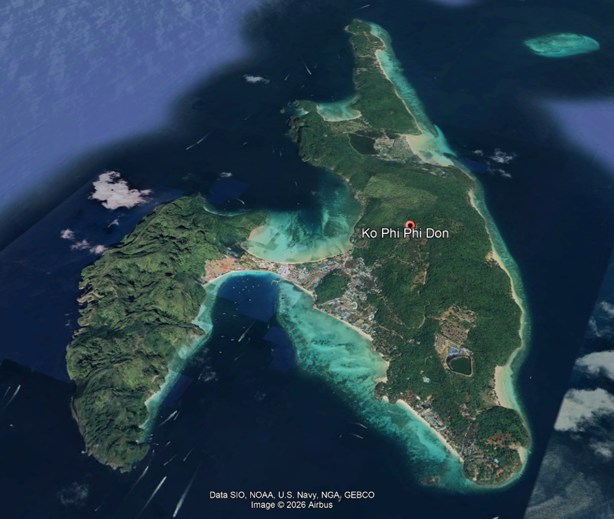

Study area
Ko Phi Phi Don, Krabi Province
Part of the Phi Phi Islands in the Andaman Sea, Ko Phi Phi Don is a distinctive dumbbell-shaped island connected by a narrow sandy tombolo between Ao Ton Sai and Ao Loh Dalum. Its combination of limestone cliffs, coral reefs and unconsolidated sandy beaches makes it especially sensitive to coastal change.

